Procure por um canal ou usuário
Resultado Exato
Resultados Similares
Exemplos

Twitch
Twitch é onde milhões de pessoas se juntam todos os dias para conversar, interagir e juntos fazerem seu próprio entretenimento. Atualmente a Twitch é a plataforma principal de transmissões ao vivo, permitindo aos telespectadores escolherem o que gostariam de assistir e conversar com aqueles também interessados no mesmo assunto.

BetterTTV
BetterTTV aprimora a Twitch e o YouTube com novas
funcionalidades, emotes e muito mais. Também conhecido como
"BTTV" ou "BetterTTV" pela comunidade, a BetterTTV visa
adicionar novos recursos a Twitch e ao YouTube (em beta).
Alguma das funcionalidades incluem:
Emotes extras no chat - BetterTTV emotes globais e emotes
customizáveis por canal, menu de emotes melhorado,
palavras-chave personalizadas para palavras, usuários, e
emblemas do chat, dividir linhas do chat para melhor leitura,
ver mensagens e links excluídos, chat Anônimo - entrar em um
canal sem exibir seu nick na lista de usuários, resgatar
automaticamente bônus de pontos de canais, drops e moments.
FrankerFZ
Use uma variedade de reações únicas na Twitch! FrankerFaceZ é um conjunto de melhorias para a Twitch que proporciona emotes de canal customizados, Twitch layouts como diferente temas e fontes, customização de chat, configurações avançadas de moderação do chat, e muitos outros recursos elaborados para fazer a Twitch mais agradável e com uma experiência social melhor para você e os canais que você ama.